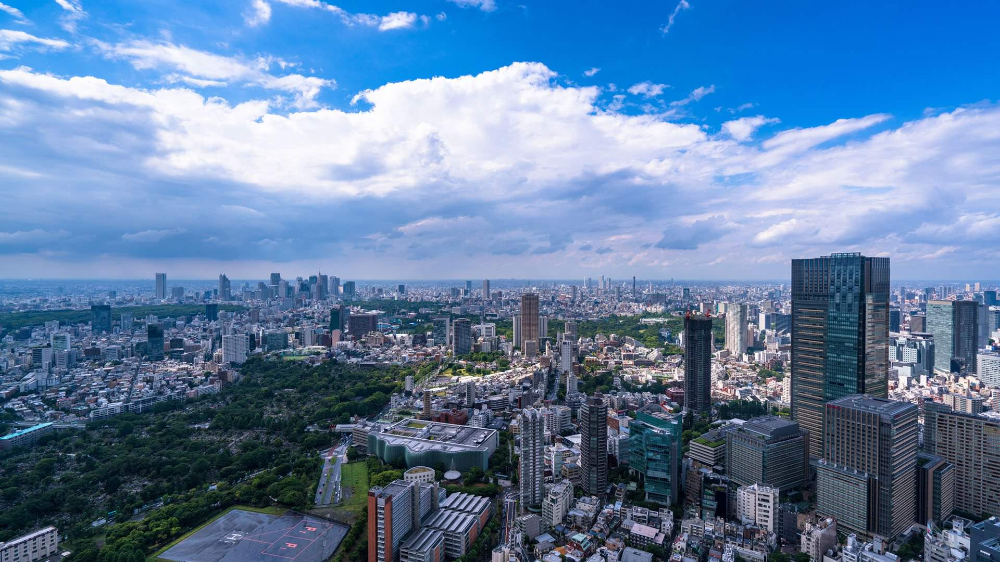

- 


震災時に発生する火災。全ての人を
その脅威から「感震ブレーカー」で守りたい。
ネオ・コーポレーションは、地震による二次災害 (電気火災) 予防に有効な手段となる、産業用の感震装置「CRS」を開発しました。ネオ・コーポレーションの電子ブレーカー「N-EBシリーズ」に感震装置「CRS」を取り付けることで、地震の揺れを感知し、通電を自動的に遮断する「感震ブレーカー」へと進化します。
感震ブレーカーとは
「感震」に「関心」を持つことが「安心」への第一歩です。
地震は直接的な揺れだけでなく、火災、津波、建物の崩壊、土砂崩れなどの二次災害をも引き起こします。その二次災害の中で最も多く発生しているのが火災。その火災の原因で最も多いのが「電気火災」です。特に、地震に伴う停電が復旧し、通電が再開される際に発生する「通電火災」は阪神・淡路大震災から注目されています。阪神・淡路大震災では、原因が特定できた火災の約6割が「通電火災」によるものでした。過去の教訓を活かし、火災抑制に効果的であると推奨され続けているのが「感震ブレーカー」。一つの備えで防げる火事があります。
- 電気が原因
- 61.16%
- ガス/油/まき/炭等が原因
- 20.86%
- タバコ/マッチ等が原因
- 8.63%
- その他
- 9.35%
特許取得済（特許第6308509号）
地震による火災の発生を低減し、｢安心｣を提供する感震装置 感震装置「CRS」は、地震発生時に揺れを感知し、自動的にブレーカーを落として電気を止めるネオ・コーポレーションが独自に開発し特許を取得した、優れた商品です。 感震装置「CRS」をネオ・コーポレーションが販売する電子ブレーカー「N-EBシリーズ」に取り付けることで、「感震ブレーカー」へと進化します。低圧200Vに対応した産業用の感震装置なので、一般家庭以上にハイリスクが想定される工場や事業所などの火災に備えることができます。
- 製品名
- CRS（CRS - Create Relief with a Seismic Device）
- サイズ
- 幅7.5mm×高さ50mm×奥行20mm
コネクタ等の突起物を除いた箱形状のサイズ
- 定格電圧
- 5V
- 消費電力
- 30mW以下
- 設置条件
- ネオ・コーポレーションの電子ブレーカーを鉛直方向に設置した状態で感震センサーを電子ブレーカーに接続
- ①感震検知機能
- 震度5強以上の揺れを感知した場合に遮断する
日本配線器具工業会規格JWDS0007付2に規定される
波形の条件を満たした場合
- ②倒壊検知機能
- 地震終息後（2分後）初期設置時との傾斜偏差が概ね20度以上あった場合に遮断する
- ③供給遮断検知機能
- 震度4以上の揺れ発生時に、電力会社が供給を遮断した場合、再通電時に強制遮断
（ただし地震終息検知の場合は除く）
- 再通電時の安全対策
- 電子ブレーカー再通電時に電子ブレーカーを強制遮断
①感震検知機能が作動時
②倒壊検知機能が作動時
電力会社が再供給時に電子ブレーカーを強制遮断
③供給遮断検知機能が作動時


地震情報
| 地震検知日時 | 震央地名 | 最大震度 |
|---|